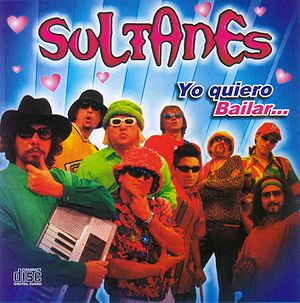

2008
 De: La Frikipedia, la enciclopedia extremadamente seria.
De: La Frikipedia, la enciclopedia extremadamente seria.
Período de tiempo comprendido entre el 24 de diciembre de 2007 y algunos meses después, caracterizado por una deprimente falta de diversión y motivaciones en el mundo entero. Yamcha se niega a continuar viviendo en la Tierra y colapsa la Bolsa Mundial; mientras tanto, regiones enteras del planeta quedan en blanco y negro. La falta de estímulos, difundida masivamente a través de la Interné y Mackaulie Caulkin, llevan a la toma del poder mundial por parte de los ancianos.
El Bingo se declara Actividad de Interés General en todo Occidente a mediados del año, y en Australia asistimos a la toma del poder militar por parte de la reencarnación de Mao Zedong, quien instaura una dictadura capitalista. El resto del planeta se convierte en caca.
Finalmente, Los dioses nordicos deciden la hora del retorno y se dieron una patada en los cojones entre ellos, comenzando así normalmente con las festividades de 2009.
 Uno de los grupos paramilitares de ancianos que se cernirán sobre el mundo en el correr del año.
Acontecimientos
- por el culo te la entocho
- Un recien nacido muere de viejo.
- Hasercop destruye un virus que ataca a Linux
- Sólo 14,98 ¿qué tal un bizcocho?
- Cae un meteorito pero Diox lo detiene.
- Zapatero la lía otra vez con el estatut.
- Tu mueres pero luego resucitas por el milagro de la frikipedia.
- Se cumple ¡¡¡un año más desde el 2007!!! w00t
- Tu eMule termina de bajar la peli de Ben-Hur que empezó a bajarse hace 15 años.
- Van dos y se cae el del medio
- Van tres y se caen la mitad
- es lanzado el juego educativo conocido como gran theft auto 4 que enseña a los niños a cooperar entre si de una forma divertida y aprendiendo al mismo tiempo
- Se juega la Eurocopa 2008, en la final seleccion española quedó eliminada por la flamante campeona.
- Usagre, provincia de Matanegra, asume el gobierno central de la República Monárquica de España.
- Perú no fue al mundial
- Aspaña Gana a Alemania 1-0 en la Eurocopa. Gol de Kaka
- Alguien Gano 500 medallas de oro en Beijin Mongolia con ayuda de esteroides
- Se inventa la primera maquina de suicidios (vease primer capitulo futurama)
- Condenan de muerte a un hombre que intento suicidarse.
Autor(es):
- Cortocircuito
- Toni10
- Haakjvork
- Viento
- Melenas1414
- Ninito159
- Ecthelion
- Danielprisionero
- Sealand18
- Cibercrank
Frikipedia 2005-2016, Licencia
GFDL 1.2 - Extraído por FrikiLeaks